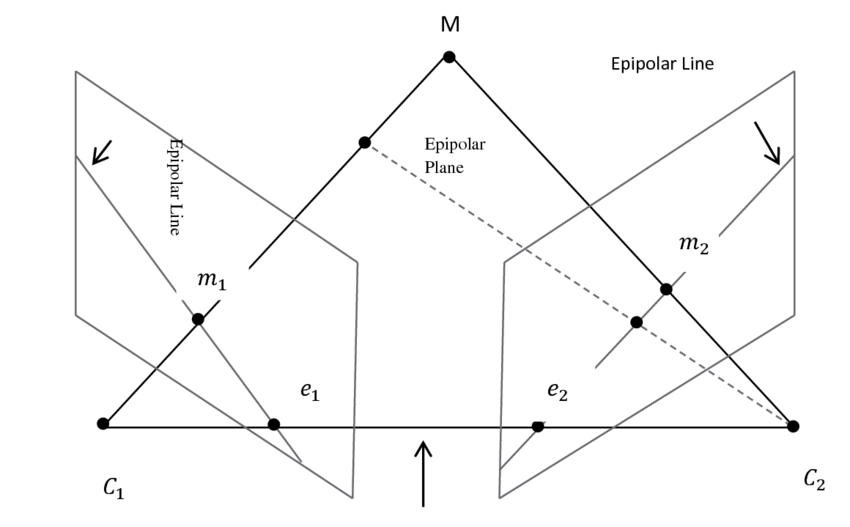

In real cameras, the image plane is actually behind the focal center, and produces an image that is symmetric about the focal center of the lens. The problem is usually simplified by placing a virtual image plane in front of the focal center. 
Notion
Points, as entities in their own right, will be denoted in italics. When such points are expressed in Euclidean coordinates, we will use bold notation, and when they are expressed in projective coordinates, they will be bold with a tilde. Thus a point M in three space might be imaged at m, and m might have coordinates \({\bf m} = (u, v)\) or \(\tilde{\bf m} = (u, v, 1)\).Of course, image points can also be expressed in the camera coordinate system. When we do this we will write m as \({\bf x} = (u - u_c, v - v_c)\) or \(\tilde{\bf x} = (u - u_c, v - v_c, 1)\).
Moreover, as with the last lecture, much of the development in this lecture is done in the setting of projective geometry, which was first introduced in Lecture 1. There is one result which we will use constantly, so it is important to have it clearly understood.
The standard epipolar geometry setup involves a 3D point \(\mathbf{M}\) and two optical center \(C_1, C_2\). The projection of \(\mathbf{M}\) in each of the image planes is located at \(\mathbf{m}_1, \mathbf{m}_2\) respectively.
The line between two optical centers \(C_1, C_2\) is referred to as the baseline.
Each optical center \(C_1, C_2\) projects onto a distinct point into the other camera's image plane, as \(e_2\) and \(e_1\), respectively. Such points are called epipole or epipolar point. Alternatively, epipoles are also defined by the intersection of baseline and corresponding image planes.
An epipolar plane is defined by the two optical center \(C_1, C_2\) and the point \(M\).
An epipolar line is a function of the position of point \(M\). The two points that define the line are the epipole and the projection of \(M\) on the image plane. For example, \(\mathbf{e}_2\mathbf{m}_2, \mathbf{e}_1\mathbf{m}_1\) are epipolar lines.
All epipolar lines in one image contain the epipole. Epipolar line is the intersection of epipolar plane and corresponding image plane. All epipolar planes intersect at the epipolar line.
Epipolar constraint and triangulation:
- All points lie on \(C_1M\) will be projected onto \(e_2m_2\)
- Suppose \(m_1, m_2\) correspond the same point on 3D space, \(M\) will be the intersection of these two projection line
Essential and fundamental matrices
Under homogeneous coordinates, given a \(4\times1\) point \(\mathbf{M}\) viewed and projected by a stereo pair of cameras onto image planes at \(3\times1\) normalized coordinates (each point is given with respect to its camera's coordinate frame.) \(\bar{m}_1, \bar{m}_2\) correspondingly, the epipolar constraint says that, the vector from the first camera's optical center to the first imaged point, the vector from the second optical center to the second imaged point, and the vector from one optical center to the other are all coplanar. Given \(R\) and \(\mathbf{t}\) as the rotation and translation between the two cameras' coordinate frames, the constrain could be expressed as \[\bar{m}_2^T(\mathbf{t}\times R\bar{m}_1)=0\]
Let's define the notion \([\mathbf{t}]_x\) as the matrix such that \([\mathbf{t}]_x \mathbf{y} = \mathbf{t}\times\mathbf{y}\) for any given \(\mathbf{y}\), then the equation could be re-written as \[\bar{m}_2^T([\mathbf{t}]_xR\bar{m}_1)=\bar{m}_2^TE\bar{m}_1=0\] where \(E = [\mathbf{t}]_xR\) is called the Essential matrix.
If the cameras are uncalibrated, that is, the mapping from pixel coordinate to normalized coordinate is unknown, then \(\bar{m}_1, \bar{m}_2\) are unknown. We need to define the mapping explicitly as \(A_1, A_2\) such that \(A = T_{internal}T_{perspective}\), then given \(m_1, m_2\) in pixel coordinates, we could get the \(\bar{m}_1, \bar{m}_2\) by \[\begin{aligned} m_1 &= A_1\bar{m}_1 \\ m_2 &= A_2\bar{m}_2 \end{aligned}\]
Then the equation defined by epipilar constraint could be written as \[\mathbf{m}_2^T A_2^{-T}(t\times R)A_1^{-1}\mathbf{m}_1 =m_2^TFm_1=0\] where \(F = A_2^{-T}EA_1^{-1}\) is called Fundamental matrix.
Proof
Algebraic Approach
Assume that \(\mathbf{M}\) is given with respect to the first camera's coordinate frame to yield the following two imaging equations:
\[\begin{aligned} \lambda_1 m_1 &= A_1 \begin{bmatrix}\mathbf{I}&\mathbf{0}\end{bmatrix}\mathbf{M}\\ \lambda_2 m_2 &= A_2 \begin{bmatrix}\mathbf{R}&\mathbf{t}\end{bmatrix}\mathbf{M} \end{aligned}\]
Geometric Approach
The epipolar line corresponding to \(m_1\) contains two points: the epipole \(\mathbf{e}\) (the projection of the first camera's optical center into the second camera) and the point at infinity associated with \(m_1\), then it could be defined as \(\mathbf{l}=\mathbf{e}\times \mathbf{m}_\infty\). Since \(m_2\) must lie on the epipolar line corresponding to \(m_1\): \[\mathbf{m}_2^T\mathbf{l} = 0\]
The Essential matrix contains five parameters (three for rotation and two for the direction of translation -- the magnitude of translation cannot be recovered due to the depth/speed ambiguity) and has two constraints: (1) its determinant is zero, and (2) its two non-zero singular values are equal. The Fundamental matrix contains seven parameters (two for each of the epipoles and three for the homography between the two pencils of epipolar lines) and its rank is always two.